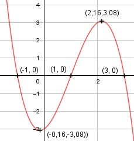

Aufgabe 37 f(x) = -x3 + 3x2 + x - 3 f'(x) = -3x2 + 6x + 1, f''(x) = -6x + 6, f'''(x) = -6 Definitionsbereich: -∞ < x < ∞ Wertebereich: -∞ < f(x) < ∞ Asymptoten: - Symmetrie: - Nullstellen: - x3 + 3x2 + x - 3 = 0 |*(-1) x3 - 3x2 - x + 3 = 0 Durch Probieren gefunden x = 1. Hornerschema: 1 -3 -1 3 x1 = 1 1 -2 -3 ------------------------- 1 -2 -3 0 Polynomdivision: -x3 + 3x2 + x - 3 : (x - 1) = -x2 + 2x + 3 -(-x3 + x2) ------------- 2x2 + x - 3 -(2x2 - 2x) --------------- 3x - 3 -(3x - 3) --------- 0 x2 - 2x - 3 = 0 p, q - Formel: p = -2, q = -3 x2,3 = x2,3 = 1 ± x2,3 = 1 ± x2,3 = 1 ± 2 x22 = 3 x3 = -1 N1(1|0), N2(3|0), N3(-1|0) Schnittpunkt mit der y-Achse: f(0) = -03 + 3 * 02 + 0 - 3 = -3 Sy(0|-3) Extrempunkte: -3x2 + 6x + 1 = 0 A, B, C - Formel: A = -3, B = 6, C = 1 x1,2 = x1,2 = x1,2 = -6 ± 6,93 x1,2 = ------------ -6 x1 = 2,16, f(2,16) = - (2,16)3 + 3 * (2,16)2 + + 2,16 - 3 = 3,08 x2 = - 0,16, f(-0,16) = -(-0,16)3 + 3 * (-0,169)2 - 0,16 - 3 = = -3,08 f''(2,16) = - 6 * 2,16 + 6 < 0 --> Hochpunkt (2,16|3,08) f''(-0,16) = - 6 * (-0,16) + 6 > 0 --> Tiefpunkt (-0,16|-3,08) Wendepunkte: - 6x + 6 = 0 |+6x 6x = 6 |:6 x = 1, f(1) = 0, f'''(1) ≠ 0 --> Wendepunkt (1|0) Graph:
